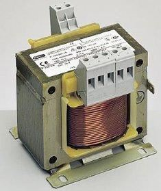
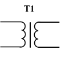
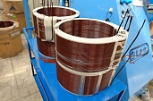
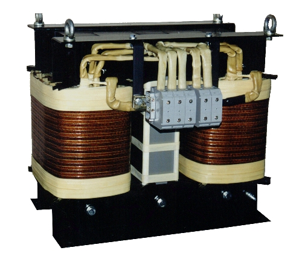
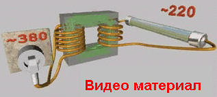
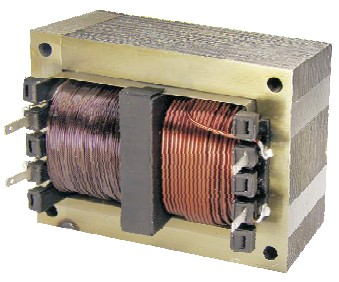
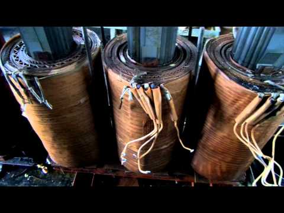
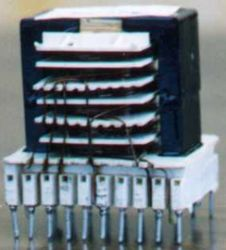
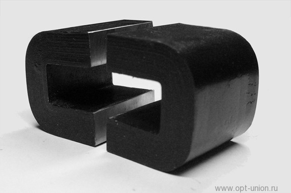
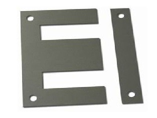

|
ТрансформаторыУстройство и рабочий процесс трансформатора |
|
| Назначение | Условное графическое обозначение | Устройство обмотки | Устройство магнитопровода | Номинальные данные |
|
Трансформатор – это статическое электромагнитное устройство, предназначенное для преобразования переменного тока одного напряжения в переменный ток той же частоты, но другого напряжения без существенных потерь мощности. |
 | Обмотки трансформаторов выполняют из обмоточных проводов круглого или прямоугольного сечения, изолированных кабельной бумагой или хлопчатобумажной тканью. Обмотка, подключаемая к источнику, считается первичной, а к потребителю – вторичной. Обмотка, выполненная из провода меньшего сечения, имеющая больше витков и большее сопротивление, называется обмоткой высшего напряжения (ВН). У обмотки низшего напряжения (НН) все наоборот. По взаимному расположению о бмотки разделяют на концентрические (выполняют в виде цилиндров) и чередующиеся (выполняют в виде отдельных секций (дисков). |
Выполняется из пластин или лент специальной холоднокатаной электротехнической стали толщиной 0,35-0,50 мм (для уменьшения потерь от вихревых токов). Листы покрываются с двух сторон изоляционной пленкой (например, лаком). Часть магнитопровода, на которой размещается обмотка называется стержнем, часть магнитопровода, которая замыкает стержни называется ярмом. Типы магнитопроводов: |
Sн – номинальная мощность трансформатора (ВА или кВА); U1н – номинальное первичное напряжение; U2н – номинальное вторичное напряжение; I1н, I2н – номинальные токи первичной и вторичной обмоток. |